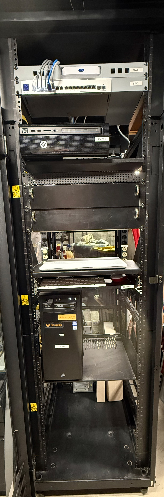

Virtualization
Proxmox VE Deployment
Deployed a dedicated virtualization platform for Windows Server, Active Directory, networking, and future lab services.
View projectIT Support Specialist • IT Administration • Networking
IT professional with hands-on experience supporting users and building Windows Server, Active Directory, virtualization, networking, and physical homelab infrastructure.
About
CompTIA IT Operations Specialist (CIOS) certified IT professional with over nine years of experience serving as the primary technology administrator for a K–12 organization supporting approximately 210 users. Experienced in Windows administration, Microsoft 365, network infrastructure, wireless networking, VoIP, endpoint support, and audiovisual systems, with a proven ability to lead technology projects, troubleshoot complex issues, and deliver excellent end-user support. I continue expanding my infrastructure skills through industry certifications and a rack-based enterprise home lab built around Proxmox, Windows Server, UniFi networking, and PowerShell automation.

Home Lab Infrastructure
I recently migrated my lab equipment into a full-size enclosed rack and introduced a consistent device-naming scheme to make the environment easier to document, troubleshoot, and expand.
Featured Work
Hands-on labs spanning virtualization, Windows infrastructure, networking, automation, and physical rack deployment.
Virtualization
Deployed a dedicated virtualization platform for Windows Server, Active Directory, networking, and future lab services.
View projectWindows Infrastructure
Built the corp.home.arpa domain with AD DS, DNS, an enterprise-style OU hierarchy, security groups, and user accounts.
View projectEndpoint Administration
Deployed CLIENT01, corrected DNS configuration, joined it to the domain, and verified enterprise authentication.
View projectWindows Administration
Centralized settings, mapped drives, security restrictions, software deployment, and folder redirection through GPOs.
View projectFile and Storage
Implemented FSRM, quotas, Shadow Copies, Previous Versions, NTFS permissions, folder redirection, and ABE.
View projectNetworking
Built a segmented UniFi lab with managed switching, multiple network/SSID roles, firewall testing, guest networking, and centralized management.
View projectAutomation
Built a reusable PowerShell troubleshooting script to collect network information, test DNS and connectivity, and inspect network adapters.
View projectInfrastructure
Centralized the home lab in a full-size enclosed rack with documented device names, power distribution, compute, networking, and room for expansion.
View projectCapabilities
Credentials
In Progress

Earned
Stackable certification earned through A+ and Network+

Earned
Networking concepts, operations, security, and troubleshooting

Earned
Core 1 and Core 2
Résumé
Contact